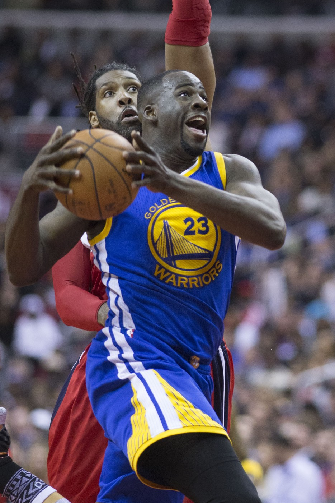
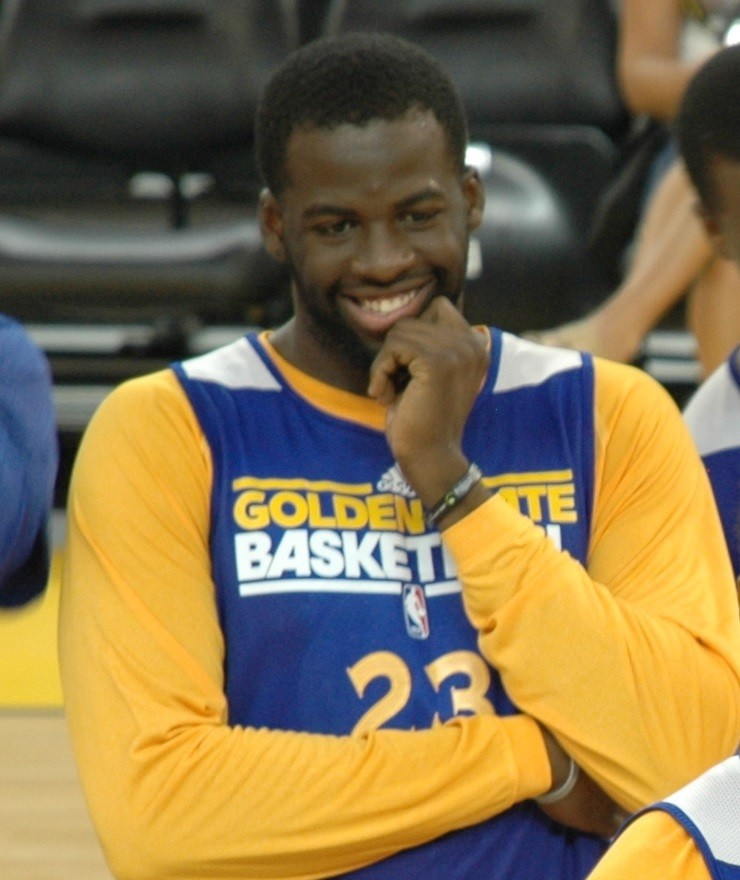
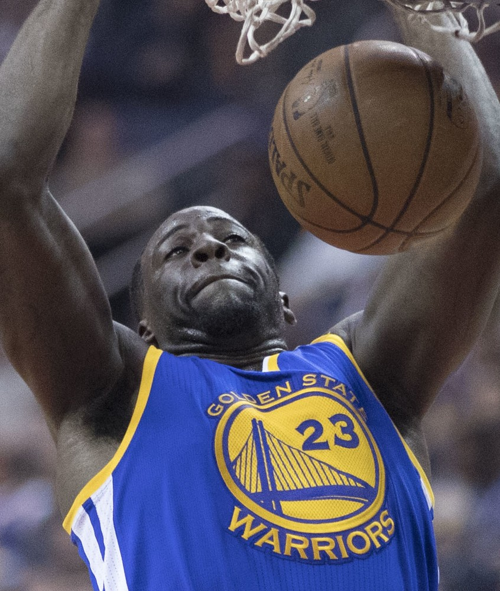
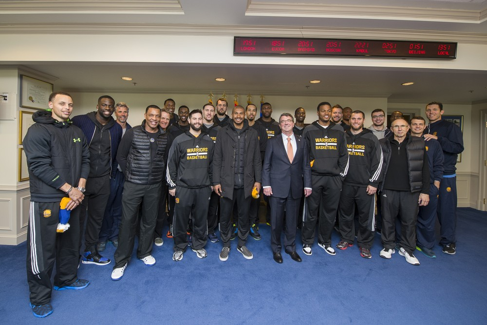

Draymond Green
A second round pick from Saginaw who became the loudest, smartest, most annoying defender in basketball, and the engine of four titles.
The Draymond Green Story
Every dynasty has the guy the other team's fans hate most. Ours was Draymond Green, and we wouldn't trade him for anybody. He talked, he fouled, he got thrown out of games, and he made the whole thing work.
He was born March 4, 1990, and grew up in Saginaw, Michigan, where he won two state titles at Saginaw High. At Michigan State he came off the bench as a freshman, won the program's first Big Ten Sixth Man award as a sophomore, and as a senior was Big Ten Player of the Year, a consensus All American and the NABC National Player of the Year. He left as the Spartans' career rebounding leader.
The Warriors took him 35th overall in 2012. As a rookie he played one minute in his debut, then hit the winning layup with 0.9 seconds left to beat the defending champion Heat on December 12. He lost 20 pounds that summer and came back a real player.
When David Lee got hurt to open 2014/15, Draymond took the starting job and never gave it back. He finished second in both Defensive Player of the Year and Most Improved, and in the Finals Steve Kerr moved him to center. He closed out Cleveland with a triple double in Game 6 and we had our first title in 40 years.
In 2015/16 he made his first All Star team and All NBA Second Team and posted 13 triple doubles, breaking Tom Gola's franchise record. He became the first player ever with 1,000 points, 500 rebounds, 500 assists, 100 steals and 100 blocks in one season. The Warriors won 73 games. Then he was suspended for Game 5 of the Finals after a tangle with LeBron James, and we lost in seven, even with his 32 points and 15 rebounds in Game 7.
He answered with the best defensive season of his life. On February 10, 2017, he had 4 points, 12 rebounds, 10 assists and 10 steals against Memphis, the first triple double in NBA history with fewer than 10 points. He led the league in steals, the Warriors went 16 and 1 in the playoffs, and he became the first Warrior ever to win Defensive Player of the Year.
A third ring came in 2018, and in those Finals he passed Wilt Chamberlain for the most playoff rebounds in Warriors history. In 2019 he posted six triple doubles in one postseason, tied with Magic Johnson for the second most ever.
After two lost years he was an All Star again in 2022, and in Game 6 of the Finals in Boston, where the crowd had cursed him all series, he had 12 points, 12 rebounds and 8 assists in the 103 to 90 clincher. Ring number four.
There's the other side, and he'd tell you himself. The punch on Jordan Poole in 2022. The stomp on Domantas Sabonis. A five game suspension for putting Rudy Gobert in a headlock, then an indefinite one for hitting Jusuf Nurkic in December 2023. As of March 2024 only Rasheed Wallace had more career ejections.
He kept going anyway. He won the NBA Hustle Award for 2024/25 and made his ninth All Defensive team. In 2025/26 he played 68 games and averaged 8.4 points, 5.5 rebounds and 5.5 assists for a team that lost in the Play In.
He gave up his player option in 2026 so the Warriors could chase LeBron James, and when James chose Philadelphia, Draymond re-signed for one year, $27.7 million, through 2026/27. It's his 15th season with us, all of them in one uniform.
What He Meant to Us
I've defended Draymond Green more than any athlete I've ever rooted for. And I'd do it again tomorrow, because the dynasty doesn't happen without him.
Steph was the star. Draymond was the reason everything fit. He guarded centers, he guarded guards, he brought the ball up and ran the offense. Kerr called him the heartbeat of the team and that's exactly right. When he was locked in, we didn't lose.
And yeah, I know. The Poole punch was indefensible. The Nurkic swing was worse. There were nights I turned the game off because I couldn't watch him do it again. But Game 6 in Boston, with that whole building cursing his name, he went out and dominated. That's him, too. Both things are true.
A 35th pick from Saginaw with four rings, a Defensive Player of the Year, and a jersey that belongs in the rafters someday. He's played his whole career here, he's still here, and when it's over I'm going to miss the yelling more than I can explain.
In Pictures



Why He Was Clutch
Draymond's clutch never looked like a buzzer beater. It looked like a stop. A switch onto a guard nobody thought he could stay with, a weak side block, a steal and an outlet before the defense turned around. In 2016/17 he led the league in steals and the Warriors went 16 and 1 in the playoffs.
When we needed him to finish, he finished. A triple double to clinch the 2015 title in Cleveland. Thirty two points and 15 rebounds in Game 7 of the 2016 Finals. Twelve, twelve and eight in Game 6 in Boston in 2022, in 42 minutes, while that crowd chanted at him. Kevon Looney said Draymond always tells them he's 90 percent in the clutch.
Nobody in Warriors history has grabbed more playoff rebounds. Not Wilt, not Nate Thurmond. That's a career of showing up in the biggest games.
Clutch Moments
- December 12, 2012
The rookie beats the champs
A second round rookie getting spot minutes, Green made the winning layup with 0.9 seconds left as the Warriors beat the defending champion Miami Heat 97 to 95.
- June 16, 2015
Triple double to clinch a title
In Game 6 of the Finals at Cleveland, Green had 16 points, 11 rebounds and 10 assists in a 105 to 97 win, playing center in place of Andrew Bogut. The Warriors were champions for the first time in 40 years, and he was only the sixth player ever with a triple double in a Finals clinching game.
- 2016 NBA Finals, Game 7
Everything he had
Back from his Game 5 suspension, Green put up 32 points, 15 rebounds and 9 assists in Game 7 against Cleveland. It wasn't enough, and it still hurts, but nobody played harder that night.
- February 10, 2017
The four point triple double
Green had 4 points, 12 rebounds, 10 assists and 10 steals in a 122 to 107 win over Memphis. It was the first triple double in NBA history with fewer than 10 points, and the 10 steals set a Warriors record.
- June 26, 2017
Defensive Player of the Year
After the Warriors beat Cleveland 4 games to 1 for their second title in three years, Green won Defensive Player of the Year with 73 of 100 first place votes, the first Warrior ever to win it.
- 2018 NBA Finals, Game 3
Passing Wilt
In Game 3 against Cleveland, Green passed Wilt Chamberlain for the most playoff rebounds in Warriors history. The Warriors finished the sweep for back to back titles.
- June 16, 2022
Game 6 in Boston
After hearing it from the Garden all series, Green had 12 points, 12 rebounds, 8 assists, 2 blocks and 2 steals in 42 minutes of a 103 to 90 closeout win. Fourth ring. He said afterward that in Game 6, he dominated.
What They Said About Green
“And for that, Draymond is the guy to point to, the leader of it all.”
“He's brash and he is who he is, but when you need him, he shows up,”
“He's our leader, and we need him to be on edge,”
“It came right through the screen. He was the heart and soul of the team.”
“I’ve always felt that Draymond is, as I’ve said, the heartbeat of the team. Steph’s obviously our best player, but Draymond has driven a lot of the winning.”
“They not just about to trade me for a bag of peanuts.”
Career Stats
| Year | Team | G | MP | PTS | REB | AST | STL | BLK | FG% | 3P% | FT% |
|---|---|---|---|---|---|---|---|---|---|---|---|
| 2012/13 | GS | 79 | 13.4 | 2.9 | 3.3 | 0.7 | 0.5 | 0.3 | .327 | .209 | .818 |
| 2013/14 | GS | 82 | 21.9 | 6.2 | 5.0 | 1.9 | 1.2 | 0.9 | .407 | .333 | .667 |
| 2014/15 | GS | 79 | 31.5 | 11.7 | 8.2 | 3.7 | 1.6 | 1.3 | .443 | .337 | .660 |
| 2015/16 | GS | 81 | 34.7 | 14.0 | 9.5 | 7.4 | 1.5 | 1.4 | .490 | .388 | .696 |
| 2016/17 | GS | 76 | 32.5 | 10.2 | 7.9 | 7.0 | 2.0 | 1.4 | .418 | .308 | .709 |
| 2017/18 | GS | 70 | 32.7 | 11.0 | 7.6 | 7.3 | 1.4 | 1.3 | .454 | .301 | .775 |
| 2018/19 | GS | 66 | 31.3 | 7.4 | 7.3 | 6.9 | 1.4 | 1.1 | .445 | .285 | .692 |
| 2019/20 | GS | 43 | 28.4 | 8.0 | 6.2 | 6.2 | 1.4 | 0.8 | .389 | .279 | .759 |
| 2020/21 | GS | 63 | 31.5 | 7.0 | 7.1 | 8.9 | 1.7 | 0.8 | .447 | .270 | .795 |
| 2021/22 | GS | 46 | 28.9 | 7.5 | 7.3 | 7.0 | 1.3 | 1.1 | .525 | .296 | .659 |
| 2022/23 | GS | 73 | 31.5 | 8.5 | 7.2 | 6.8 | 1.0 | 0.8 | .527 | .305 | .713 |
| 2023/24 | GS | 55 | 27.1 | 8.6 | 7.2 | 6.0 | 1.0 | 0.9 | .497 | .395 | .730 |
| 2024/25 | GS | 68 | 29.2 | 9.0 | 6.1 | 5.6 | 1.5 | 1.0 | .424 | .325 | .687 |
| 2025/26 | GS | 68 | 27.5 | 8.4 | 5.5 | 5.5 | 0.9 | 0.6 | .418 | .326 | .702 |
| Career | 949 | 28.6 | 8.7 | 6.8 | 5.6 | 1.3 | 1.0 | .447 | .321 | .710 |
Per game averages except G. Every game with the Warriors. Table runs through the 2025/26 season; he re-signed in July 2026 for a 15th season, 2026/27. Scroll the table sideways on a phone.
Playoffs, per game
| Year | Team | G | MP | PTS | REB | AST | STL | BLK | FG% | 3P% | FT% |
|---|---|---|---|---|---|---|---|---|---|---|---|
| 2012/13 | GS | 12 | 18.6 | 5.8 | 4.3 | 1.6 | 0.5 | 0.8 | .429 | .391 | .765 |
| 2013/14 | GS | 7 | 32.6 | 11.9 | 8.3 | 2.9 | 1.7 | 1.7 | .467 | .276 | .792 |
| 2014/15 | GS | 21 | 37.3 | 13.7 | 10.1 | 5.2 | 1.8 | 1.2 | .417 | .264 | .736 |
| 2015/16 | GS | 23 | 38.2 | 15.4 | 9.9 | 6.0 | 1.6 | 1.8 | .431 | .365 | .738 |
| 2016/17 | GS | 17 | 34.9 | 13.1 | 9.1 | 6.5 | 1.8 | 1.6 | .447 | .410 | .687 |
| 2017/18 | GS | 21 | 39.0 | 10.8 | 10.6 | 8.1 | 2.0 | 1.5 | .432 | .266 | .796 |
| 2018/19 | GS | 22 | 38.7 | 13.3 | 10.1 | 8.5 | 1.5 | 1.5 | .498 | .228 | .718 |
| 2021/22 | GS | 22 | 32.0 | 8.0 | 7.2 | 6.3 | 1.1 | 1.0 | .479 | .205 | .638 |
| 2022/23 | GS | 12 | 30.6 | 9.4 | 6.9 | 6.8 | 1.5 | 1.0 | .462 | .250 | .727 |
| 2024/25 | GS | 12 | 32.4 | 9.1 | 5.5 | 3.8 | 1.4 | 0.9 | .389 | .267 | .692 |
| Career | 169 | 34.5 | 11.4 | 8.6 | 6.0 | 1.5 | 1.3 | .445 | .300 | .726 |